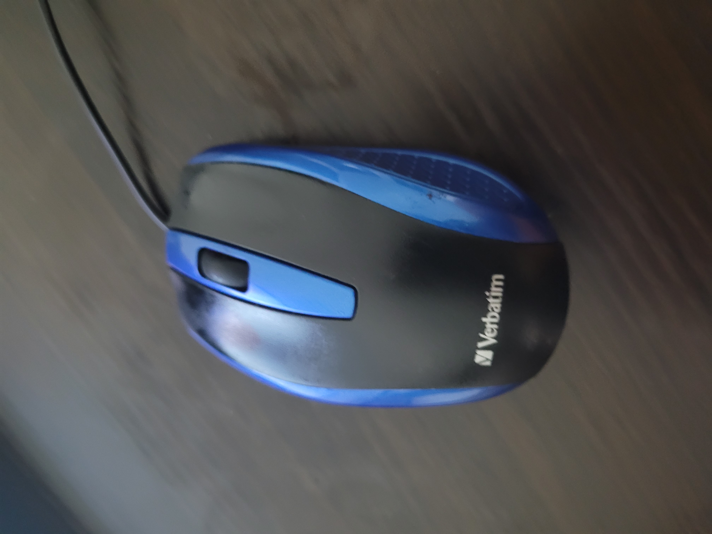

-
Google Lens - Calendar
Mobile Net - Tray
Conclusion - Google Lens is more accurate compared to Mobile Net
Google Lens - Chair Mobile Net - Window Shade Conclusion - Google Lens is more accurate compared to Mobile Net

Google Lens - History Book Mobile Net - Notebook Conclusion - Google Lens is more accurate compared to Mobile Net
Google Lens - Business Bag Mobile Net - Wallet Conclusion - Both Google Lens and Mobile Net are inaccurate
Google Lens - Pushpin Mobile Net - Screwdriver Conclusion - Google Lens is more accurate compared to Mobile Net
 Google Lens - Mouse Mobile Net - Remote Control Conclusion - Google Lens is more accurate compared to Mobile Net
Google Lens - Paper Mobile Net - Toilet Paper Conclusion - Google Lens is more accurate compared to Mobile Net
Google Lens - Pencil Mobile Net - Nail Conclusion - Google Lens is more accurate compared to Mobile Net
Google Lens - Wire Mobile Net - Microphone Conclusion - Google Lens is more accurate compared to Mobile Net
-
Results - Google Lens identified 9 out of the 10 images and Mobile Net identified 0 out of the 10 images, so Google Lens is more accurate